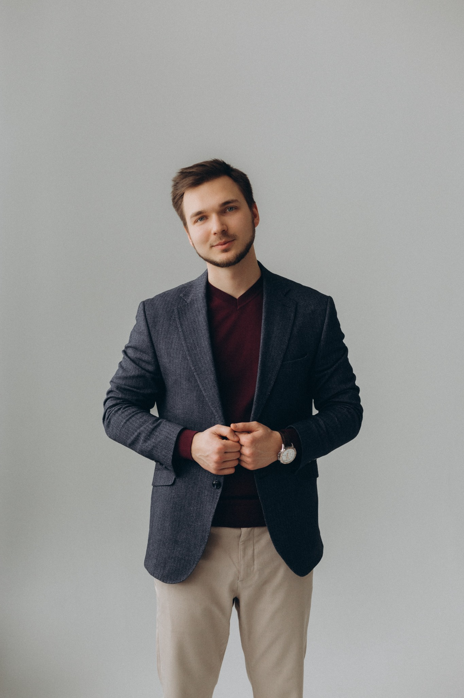

90-дневная повестка CAIO
Что решить сначала, кого вовлечь и какие зависимости важно учесть
Индивидуальные консультации и работа с командами для CAIO, CTO, CIO и руководителей трансформации
Берём одну актуальную задачу, собираем контекст, определяем критерии и фиксируем следующий шаг
Индивидуальные консультации и обучение команд — бесплатно
Что решить сначала, кого вовлечь и какие зависимости важно учесть
Единый способ сравнивать кейсы по ценности, сложности, данным, риску и готовности владельца процесса
Кто предлагает, кто проверяет, кто финансирует, кто принимает риск и кто отвечает после запуска
Инвентаризация, оценка, доступы, human review, мониторинг, инциденты и след изменений — без бюрократии ради бюрократии
Набор проверок для данных, интеграций, размещения, наблюдаемости, стоимости и выхода из зависимости
Знания и практики для конкретных ролей, решений и рабочих процессов
Для старта выбираем один–три артефакта, которые помогают двигаться дальше
Продукт, архитектура, аналитика и внедрение — знакомьтесь с экспертами и их командами
Продукт, бизнес и инженерная реализация AI
Co-founder CENTURY · CTO STACKLEVEL GROUP
Работает на стыке продукта, архитектуры и инженерной эксплуатации: от защищённого доступа к данным до перехода от пилота к внедрению
Наука · Технологии · Инновации
CEO, Co-founder CENTURY
Ведёт бизнес-внедрение: выбор направлений для пилотов, работа с руководителями и владельцами процессов, вовлечение сотрудников
Бизнес · Экономика AI · Стратегия
CAIO · CENTURY AI
Работает с AI-архитектурой и инженерной реализацией: помогает переводить задачи и ограничения внедрения в работающие системы
Автоматизация · AI-агенты · Процессы
Внедрение AI, внутренние продукты и аналитика

Head of AI, MyFin Group
Также — Bankiros.ru
Отвечает за эффективное и прибыльное внедрение AI в среднем бизнесе, строит внутренние продукты и аналитику
Внедрение · Продукт · Аналитика
Формат подбираем под вашу роль, команду и ближайшее управленческое решение
Мандат, стейкхолдеры, портфель, ограничения и решение, которое нужно принять
Разбираем варианты, критерии и последствия для вашей ситуации
Синхронизируем бизнес, IT, данные, безопасность и владельцев процессов
Фиксируем договорённости и следующий шаг на горизонте 30/60/90 дней
Новый CAIO, которому нужно собрать первые 90 дней и договориться о мандате
CTO, CIO или CDAO, на которого фактически легла ответственность за AI
Руководитель трансформации, инноваций или AI Center of Excellence
C-level команда, которая только проектирует роль и operating model
Да. Индивидуальные консультации и обучение команд проходят без оплаты. Никакой покупки продукта или услуг не требуется.
Нет. Достаточно отвечать за AI-стратегию, портфель инициатив, внедрение или координацию бизнеса и технологий.
Напишите отрасль, вашу роль, текущую ситуацию и одно решение, которое нужно принять. Используйте обезличенные данные.
Да. Особенно полезен кросс-функциональный состав: бизнес, IT, данные, безопасность, юристы и владелец процесса.
Основной формат — живая работа с вашим контекстом. Материалы и последовательность тем подбираются под задачу.
Можно коротко: компания, роль и вопрос, который важно решить сейчас